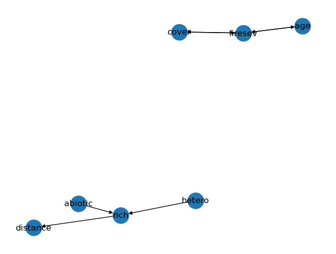

import random
import numpy as np
import pandas as pd
import matplotlib.pyplot as plt
import seaborn as sns
import networkx as nx
np.random.seed(42)Week 8: Causal discovery
Also need scipy and the statsmodel
np.random.seed(1)
n = 10000
a = np.random.normal(0, 1, n)
b = np.random.normal(0, 1, n)
c = 0.3*a + 0.2*b + np.random.normal(0, 0.01, n)
d = 0.8*c + np.random.normal(0, 0.01, n)
df = pd.DataFrame({'a': a,
'b': b,
'c': c,
'd': d})sns.pairplot(df)PC
import castle as gcfrom castle.algorithms import PC
pc = PC(alpha=0.05)import inspect
# Get the signature of the function
sig = inspect.signature(PC)
# Print the parameters
print(sig.parameters)OrderedDict({'variant': <Parameter "variant='original'">, 'alpha': <Parameter "alpha=0.05">, 'ci_test': <Parameter "ci_test='fisherz'">, 'priori_knowledge': <Parameter "priori_knowledge=None">})pc.learn(df)pc.causal_matrixTensor([[0, 0, 1, 0],
[0, 0, 1, 0],
[0, 0, 0, 1],
[0, 0, 0, 0]])pc.causal_matrixTensor([[0, 0, 1, 0],
[0, 0, 1, 0],
[0, 0, 0, 1],
[0, 0, 0, 0]])from castle.common import GraphDAG
GraphDAG(pc.causal_matrix)def show_graph_with_labels(adjacency_matrix, mylabels, mypos=None):
rows, cols = np.where(adjacency_matrix == 1)
edges = zip(rows.tolist(), cols.tolist())
gr = nx.DiGraph()
gr.add_edges_from(edges)
if mypos is not None:
nx.draw(gr, node_size=500, labels=mylabels, pos=mypos, with_labels=True)
else:
nx.draw(gr, node_size=500, labels=mylabels, with_labels=True)
plt.show()
node_labels = {0: 'a', 1: 'b', 2: 'c', 3: 'd'}
node_pos = {0: (0, 0), 1: (0, 2), 2: (1, 1), 3: (2, 1)}
show_graph_with_labels(pc.causal_matrix, mylabels = node_labels, mypos = node_pos)
GES
from castle.algorithms import GES
ges = GES()ges.learn(df)ges.causal_matrixTensor([[0, 0, 1, 0],
[0, 0, 1, 0],
[0, 0, 0, 1],
[0, 0, 0, 0]])GraphDAG(ges.causal_matrix)
show_graph_with_labels(ges.causal_matrix, mylabels = node_labels, mypos = node_pos)keeley = pd.read_csv("./data/keeley.csv")
keeley.drop('elev', axis=1, inplace=True)
keeley.describe()| distance | abiotic | age | hetero | firesev | cover | rich | |
|---|---|---|---|---|---|---|---|
| count | 90.000000 | 90.000000 | 90.000000 | 90.000000 | 90.000000 | 90.000000 | 90.000000 |
| mean | 49.234583 | 49.239025 | 25.566667 | 0.683319 | 4.565000 | 0.691232 | 49.233333 |
| std | 8.829480 | 7.679109 | 12.566274 | 0.114818 | 1.652347 | 0.317235 | 15.105658 |
| min | 37.037450 | 32.593865 | 3.000000 | 0.384182 | 1.200000 | 0.055577 | 15.000000 |
| 25% | 39.459800 | 43.812007 | 15.000000 | 0.624576 | 3.700000 | 0.487690 | 37.000000 |
| 50% | 51.770850 | 48.036046 | 25.000000 | 0.684314 | 4.300000 | 0.637118 | 50.000000 |
| 75% | 58.402237 | 54.898285 | 35.000000 | 0.768369 | 5.550000 | 0.914676 | 62.000000 |
| max | 60.723000 | 70.456286 | 60.000000 | 0.877938 | 9.200000 | 1.535408 | 85.000000 |
keeley_pc = PC(alpha=0.005)
keeley_pc.learn(keeley)keeley.columnsIndex(['distance', 'abiotic', 'age', 'hetero', 'firesev', 'cover', 'rich'], dtype='object')node_labels = {0: 'distance', 1: 'abiotic',
2: 'age', 3: 'hetero',
4: 'firesev', 5: 'cover',
6: 'rich'}
node_pos = {0: (0, 0), 1: (0, 2),
2: (1, 1), 3: (2, 1),
4: (1, 1), 5: (2, 1),
6: (1, 1), 7: (2, 1),
8: (1, 1)}
show_graph_with_labels(keeley_pc.causal_matrix, mylabels = node_labels)
header_dict = dict.fromkeys(keeley.columns, None)
print(header_dict){'distance': None, 'abiotic': None, 'age': None, 'hetero': None, 'firesev': None, 'cover': None, 'rich': None}from castle.algorithms import PC
pc = PC(alpha=0.05)
pc.learn(df)
pc.causal_matrixTensor([[0, 0, 1, 0],
[0, 0, 1, 0],
[0, 0, 0, 1],
[0, 0, 0, 0]])